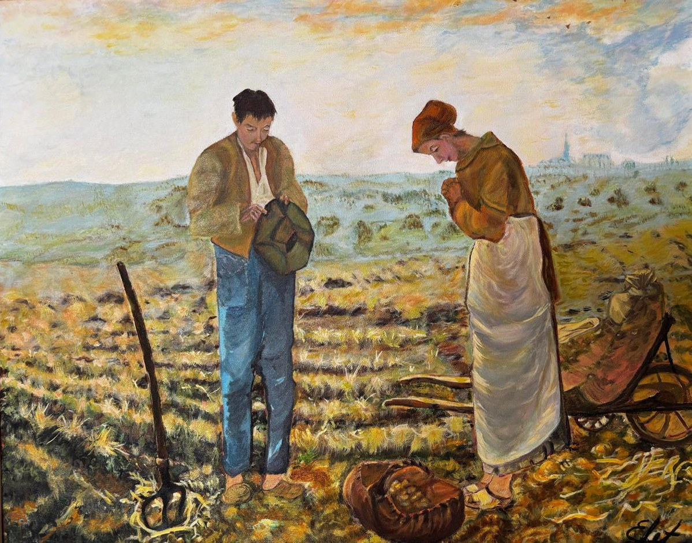
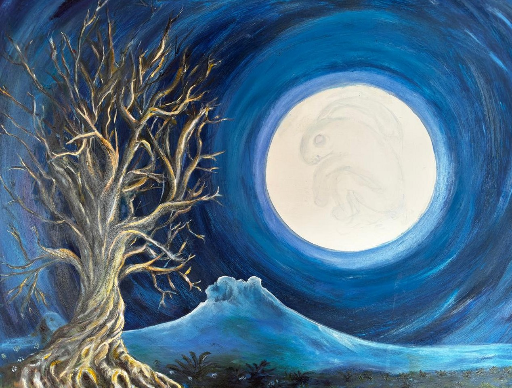

Galería virtual · Óleo sobre lienzo
Luz, tierra y silencio
La obra pictórica de la Dra. Leticia Vázquez Reyes: médica de profesión y pintora por vocación. Un recorrido en tres salas por el trabajo del campo, el claroscuro de los grandes maestros y las raíces que nos nombran.

Texto de sala
La mirada que sana y crea
En la consulta, Leticia mira a los ojos, escucha el cuerpo y busca el origen oculto de un malestar. Frente al lienzo hace lo mismo: observa hasta que la escena deja de ser solo forma y revela su peso, su historia y su emoción.
Desde hace más de siete años, en las pausas que le regalan su profesión y su familia, conversa con los maestros que admira. Copiar, para ella, es una forma de estudiar: entender cómo cae la luz sobre una espalda cansada, cómo un rojo se enciende desde la sombra.
Colección
Tres salas, ocho obras
Obra destacada
Luna de conejo
Un árbol desnudo, retorcido como un sistema nervioso, se recorta contra una luna llena enorme. Dentro de ella, apenas sugerido, aparece el conejo que la tradición mesoamericana ve en la luna.
- TécnicaÓleo sobre lienzo
- PaletaAzules ultramar y de Prusia, blancos cálidos en el halo
- MiraLos círculos concéntricos del cielo y el rostro en la luna

Pasa el cursor o arrastra el dedo sobre la obra para verla de cerca.
Diálogo con los maestros
Aprender pintando a quienes admiro
Durante siglos, los pintores se formaron copiando a los grandes. Estas son las voces con las que dialoga la obra.
-
01
Jean‑François MilletFrancia · 1814–1875 · Realismo
El pintor de los campesinos. Dio dignidad monumental al trabajo diario de la tierra: sembrar, espigar, detenerse a orar cuando suena la campana.
-
02
Bartolomé Esteban MurilloEspaña · 1617–1682 · Barroco
Llevó la ternura a la pintura de género: niños de la calle de Sevilla retratados con una luz cálida, sin juicio y con complicidad.
-
03
Tiziano VecellioVenecia · c. 1488–1576 · Renacimiento
Maestro del color veneciano y de la pincelada suelta. Su Cristo con la cruz a cuestas es una lección de dramatismo contenido.
-
04
El tenebrismoEuropa · siglo XVII · Barroco
Heredero de Caravaggio: figuras que emergen de la oscuridad total, iluminadas por una sola fuente, a veces una simple vela.
Dos oficios, una mirada
Del consultorio al caballete
Observar
Antes de diagnosticar, se mira con calma: el color de la piel, la postura, lo que el paciente no dice.
Mirar
Antes de pintar, se estudia la escena hasta entender de dónde viene la luz y hacia dónde va la sombra.
Anatomía
Conocer músculos, huesos y tendones es parte del oficio médico.
Figura
Ese mismo conocimiento sostiene una espalda encorvada o una mano que carga una cruz.
Paciencia
Sanar lleva tiempo; cada tratamiento se ajusta con cuidado.
Veladuras
El óleo también: capa sobre capa, esperando a que cada una seque.
“Mis pinturas de alto contraste no solo muestran una imagen: intentan meter al espectador dentro de una emoción común.”
El taller
Cómo nace una obra
Estudio
Se elige la escena y se analiza: composición, fuente de luz, gama de color.
Dibujo e imprimatura
Se encaja el dibujo sobre el lienzo y se cubre con un tono base que unifica la obra.
Capas y veladuras
Del oscuro al claro, el óleo se construye en capas finas que dan profundidad y brillo.
Reposo y barniz
La pintura descansa durante semanas antes del barniz final que la protege.
Encargos y adquisiciones
Hablemos de arte
Si alguna obra resuena contigo, o deseas una pieza pensada para tu espacio, será un gusto escucharte.
- Consultas sobre las obras de esta galería
- Encargos de obra al óleo
- Invitaciones a exposiciones y colaboraciones